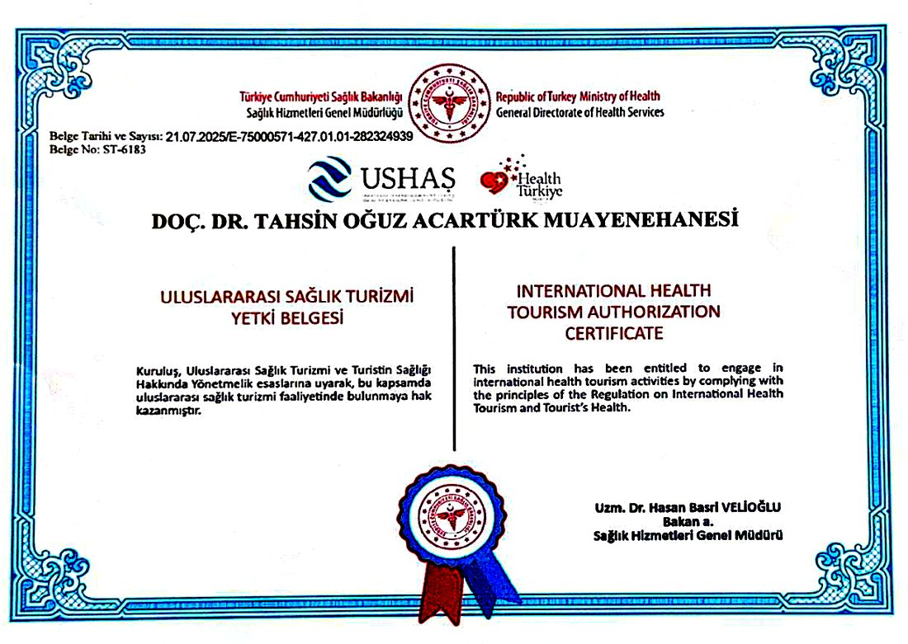

Pittsburgh Üniversitesi Doçenti · Mikrocerrahi Uzmanı
Zor vakaların cerrahı.
Doğal sonuçların hekimi.
Lenfödem ve lipödem mikrocerrahisinden estetik cerrahiye — 20 yılı aşkın uluslararası deneyim, kanıta dayalı planlama ve dürüst bir yaklaşım. Türkiye ve Amerika Birleşik Devletleri'nde aktif cerrahi pratik.
- T.C. Sağlık Bakanlığı sağlık turizmi yetkili
- Pittsburgh Üniversitesi Doçenti
- 60+ uluslararası bilimsel yayın
- Ağız, Yüz ve Çene Cerrahisi üst uzmanlığı


Yetki Belgesi
Uluslararası Sağlık Turizmi Yetki Belgesi
T.C. Sağlık Bakanlığı tarafından düzenlenen, yurt dışından gelen hastalara sağlık hizmeti sunma yetkisini belgeleyen resmî ruhsat. Yalnızca Bakanlığın belirlediği nitelik ve denetim koşullarını sağlayan sağlık kuruluşlarına ve hekimlere verilir.
-
European Board of Plastic SurgeryAvrupa Plastik, Rekonstrüktif ve Estetik Cerrahi yeterlilik belgesi
-
Ağız, Yüz ve Çene CerrahisiT.C. Sağlık Bakanlığı üst uzmanlık belgesi — Türkiye'de bu belgeye sahip sayılı plastik cerrahtan biri
-
Genç Plastik Cerrah ÖdülüAvrupa Plastik Cerrahi Derneği (EURAPS) tarafından verildi
Eğitim ve akademik görev aldığı kurumlar


Uzmanlık Alanları
İki dal, tek disiplin: onarım ve estetik
En güvenli estetik cerrahlar, iyi onarım cerrahları arasından çıkar. Rekonstrüktif mikrocerrahideki hassasiyet, estetik ameliyatlarda daha doğal ve daha öngörülebilir sonuçlar anlamına gelir.
Mikrocerrahi & Rekonstrüktif Cerrahi
Mikroskop altında 1 mm çapındaki damarların onarımıyla kaybedilmiş dokuların yeniden inşası. Plastik cerrahinin en teknik alanı — ve bu pratiğin merkezi.
- Lenfödem cerrahisi (LVA, lenf nodu transferi)
- Lipödem cerrahisi ve şekillendirme
- Mikrotia — doğuştan kulak yokluğu onarımı
- Baş, boyun ve çene rekonstrüksiyonu
- Yüz felci — dinamik kas aktarımı
- Meme kanseri sonrası meme rekonstrüksiyonu
- El cerrahisi ve uzuv replantasyonu
- Yanık, travma ve ışın tedavisi sonrası onarım
Estetik Cerrahi
Ölçülü, orantılı ve kalıcı sonuçlar. Her plan; anatomi, yaşam tarzı ve gerçekçi beklenti üçgeninde kişiye özel kurulur — moda tekniklere göre değil.
- Rinoplasti — işlevsel ve estetik burun cerrahisi
- Meme büyütme, küçültme ve dikleştirme
- Yüz germe ve boyun gençleştirme
- Göz kapağı estetiği (blefaroplasti)
- Karın germe (abdominoplasti)
- Liposuction ve vücut şekillendirme
- Yağ enjeksiyonu ve kök hücre destekli hacimlendirme
- Kol, uyluk ve gövde germe
- Jinekomasti — erkekte meme küçültme
- Lip lift, bişektomi, kulak estetiği
Odak Program
Lenfödem tedavisi: erken cerrahi fark yaratır
Lenfödem, yıllarca yalnızca bandaj ve masajla idare edilmesi gereken bir kader değildir. Erken evrelerden itibaren mikrocerrahi ile tedavi edilebilen bir hastalıktır. Doğru evreleme, doğru yöntemi belirler.
Lenfatikovenöz AnastomozLVA
Tıkalı lenf kanallarının, mikroskop altında yaklaşık 0,3–0,8 mm çapındaki küçük toplardamarlara bağlanması. Erken evrede en az invaziv seçenek; genellikle küçük kesilerle uygulanır.
Vaskülarize Lenf Nodu TransferiVLNT
Sağlıklı bir bölgeden damarlarıyla birlikte alınan lenf nodlarının etkilenen bölgeye aktarılması. İleri evrede ve lenf kanalı hasarının yaygın olduğu durumlarda tercih edilir.
Azaltıcı Cerrahi ve Lipödem Liposuction'ıWAL / PAL
Lenfatik yapıları koruyan özel liposuction teknikleriyle hacim ve ağrının azaltılması. Lipödemde ana tedavi, ileri evre lenfödemde ise tamamlayıcı basamaktır.
Meme Kanseri Sonrası Kol LenfödemiONKOLOJİK
Aksiller lenf nodu diseksiyonu ve radyoterapi sonrası gelişen kol şişliğinde, rekonstrüksiyonla eş zamanlı planlanabilen kombine yaklaşımlar.
Şişliğiniz lenfödem mi, lipödem mi?
Bu tablo yalnızca bilgilendirme amaçlıdır ve muayene yerine geçmez. Her bacak şişliği ödem değildir; kesin tanı için hekim değerlendirmesi, gerektiğinde lenfosintigrafi veya ICG lenfografi gereklidir.
Görüntülerinizi WhatsApp'tan gönderin Evreleme, tanı ve cerrahi yöntemlerin tamamı →Doğrulanabilir Kimlik
Güven, iddia ile değil kayıtla kurulur
Aşağıdaki bilgilerin tamamı bağımsız kaynaklardan doğrulanabilir. Bir cerrahı değerlendirirken bakmanız gereken de tam olarak budur.
Uluslararası yayın
Hakemli dergilerde yayımlanmış bilimsel makaleler ve kitap bölümleri. PubMed üzerinden aranabilir.
Yakın sayıda sunum
Uluslararası kongre ve sempozyumlarda yapılmış bilimsel sunum ve konuşma.
Direktörlük görevi
Pittsburgh Üniversitesi Plastik Cerrahi Bölümü Baş–Boyun Onarımları Direktörlüğü.
Meslektaş yönlendirmesi
Pittsburgh'daki meslektaşları rinoplasti ve meme küçültme hastalarını kendisine yönlendirmiştir. Bir cerrahın en güçlü referansı, diğer cerrahlardır.
Akademik kaydı ve kurumsal kimliği doğrudan kaynağından teyit edebilirsiniz.
Cerrahınız
Doç. Dr. Tahsin Oğuz Acartürk
Hacettepe Üniversitesi Tıp Fakültesi'nden mezun olduktan sonra uzmanlık eğitimini Amerika Birleşik Devletleri'nde tamamladı. Pittsburgh Üniversitesi'nin entegre plastik cerrahi programına kabul edilen ilk Türk plastik cerrahtır.
Pittsburgh Üniversitesi'nde Baş–Boyun Onarımları Direktörlüğü görevini yürüttü; bu dönemde 300'ün üzerinde baş–boyun mikrocerrahi ameliyatı gerçekleştirdi. Kök hücre, doku mühendisliği ve yağ dokusu teknolojileri üzerine çalışan ilk Türk plastik cerrahlardan biridir.
Avrupa Plastik Cerrahi Derneği'nin "Genç Plastik Cerrah" ödülünü aldı, Helsinki Üniversitesi'nde fellow olarak çalıştı ve T.C. Sağlık Bakanlığı'ndan Ağız, Yüz ve Çene Cerrahisi üst uzmanlığı edindi. Her yıl Vietnam'da gönüllü cerrahi misyonlara katılmakta; mikrotia, dudak–damak yarığı ve brakiyal pleksus cerrahisi uygulamaktadır.
"Doğanın verdiğini insana geri vermek zordur. İyi bir cerrah hiçbir vakayı basit görmez."
Doç. Dr. Tahsin Oğuz Acartürk- HACETTEPE ÜNİVERSİTESİTıp Doktoru — Tıp Fakültesi mezuniyeti
- PITTSBURGH & CARNEGIE MELLONPostdoctoral Fellow — kas kök hücresi, doku mühendisliği ve biyomateryaller
- UNIVERSITY OF PITTSBURGHEntegre Plastik Cerrahi İhtisası — ABD'nin ilk üç kliniği arasında; 3 yıl genel cerrahi, 3 yıl plastik cerrahi
- GATA & ÇUKUROVA ÜNİVERSİTESİÖğretim Üyeliği ve Doçentlik — yanık, savaş yaralanmaları ve mikrocerrahi
- UNIVERSITY OF HELSINKIMikrocerrahi Fellowship — Avrupa Plastik Cerrahi Derneği "Genç Plastik Cerrah" ödülü ile
- PITTSBURGH ÜNİVERSİTESİBaş–Boyun Onarımları Direktörü — 300+ mikrocerrahi vaka, %100 doku yaşayabilirliği
- BOARD SERTİFİKALARIAmerican Board of Plastic Surgery ve European Board of Plastic, Reconstructive and Aesthetic Surgery
- İZMİR & PITTSBURGHGüncel pratik — İzmir'de özel muayenehane, Pittsburgh Üniversitesi'nde devam eden akademik görev
Hasta Deneyimleri
Hastalarımızın deneyimleri
Tedavi süreci hakkındaki görüşler, izin alınarak ve kimlik bilgileri paylaşılmadan yayımlanır.
Bu alana hasta görüşünü ekleyin. Kısa, somut ve süreç odaklı metinler en ikna edici olanlardır.
Bu alana hasta görüşünü ekleyin. Tedavi öncesi tereddütler ve süreçte alınan destek gibi ayrıntılar okuyucuya daha çok şey anlatır.
Bu alana hasta görüşünü ekleyin. Yurt dışından gelen hastaların seyahat ve takip deneyimi ayrı bir kart olarak güçlü çalışır.
Paylaşılan görüşler kişisel deneyimlerdir ve tedavi sonucuna dair bir taahhüt oluşturmaz. Her hastanın anatomisi ve iyileşme süreci farklıdır.
Süreç
İlk mesajdan son kontrole
Şeffaf, aceleye getirilmeyen ve her adımı önceden bilinen bir yol haritası.
Ön görüşme
WhatsApp veya telefonla ilk temas. Şikâyetiniz, geçmiş tedavileriniz ve varsa görüntüleriniz üzerinden ilk yönlendirme yapılır.
Muayene ve planlama
Yüz yüze ya da çevrim içi ayrıntılı değerlendirme. Gerekli görüntüleme, uygulanabilir yöntemler, riskler ve gerçekçi beklentiler açıkça konuşulur.
Ameliyat
Tam donanımlı hastane koşullarında, gerektiğinde çok disiplinli ekiple. Anestezi ve yatış süreci önceden netleştirilir.
İyileşme ve takip
Planlı kontroller, yara bakımı ve gerektiğinde fizyoterapi yönlendirmesi. Şehir dışı ve yurt dışı hastalar için çevrim içi takip.
Sık Sorulan Sorular
Merak edilenler
Lenfödem ameliyatla tedavi edilebilir mi?
Lenfödem, erken evrelerden itibaren cerrahi ile tedavi edilebilen bir hastalıktır. Evreye göre lenfatikovenöz anastomoz (LVA), vaskülarize lenf nodu transferi veya azaltıcı yöntemler tek başına ya da birlikte planlanır. Uygun yöntem, ancak muayene ve görüntüleme sonrası belirlenebilir.
Lipödem ile lenfödem arasındaki fark nedir?
Lipödem tipik olarak simetriktir, her iki bacağı benzer şekilde etkiler ve şişlik ayak bileğinde durur; ayaklar korunur. Lenfödem ise genellikle asimetriktir ve şişlik ayak sırtına ve parmaklara kadar uzanır. Lipödemde doku dokunmakla ağrılı olabilirken lenfödemde cilt daha gergindir. Kesin ayrım için hekim muayenesi gereklidir.
Sağlık turizmi yetki belgesi ne anlama gelir?
T.C. Sağlık Bakanlığı'nın uluslararası sağlık turizmi yetki belgesi, yurt dışından gelen hastalara sağlık hizmeti sunabilmek için zorunludur. Bakanlığın belirlediği nitelik, personel ve denetim koşullarını sağlayan kuruluş ve hekimlere verilir; hastanın yasal güvence altında tedavi görmesini sağlar.
Yurt dışından hasta kabul ediyor musunuz?
Evet. Ön değerlendirme çevrim içi görüşme ve gönderdiğiniz görüntülerle yapılır; ardından size özel bir seyahat ve tedavi takvimi planlanır. İngilizce hasta iletişimi mevcuttur.
Ameliyat sonrası takip nasıl yapılıyor?
İyileşme süreci önceden planlanan kontrol randevularıyla izlenir. Şehir dışı ve yurt dışı hastalar için çevrim içi takip görüşmeleri düzenlenir; gerektiğinde bulunduğunuz şehirdeki fizyoterapi ekibiyle iletişim kurulur.
Mikrocerrahi nedir ve neden önemlidir?
Mikrocerrahi, bir dokunun damarlarıyla birlikte alınıp, mikroskop altında yaklaşık 1 mm çapındaki damarların yeniden birleştirilmesiyle başka bir bölgeye aktarılmasıdır. Plastik cerrahinin en teknik alanıdır ve kaybedilmiş dokuların yeniden inşasını, lenfatik sistemin onarımını mümkün kılar.
İletişim
Randevu ve ön değerlendirme
Sorularınızı doğrudan iletebilir, görüntülerinizi paylaşabilirsiniz. Mesajlar hafta içi mesai saatleri içinde yanıtlanır.
Mansuroğlu Mah. Ankara Cad. No:81
İç Kapı No:23 · Bayraklı / İzmir 35030
Cumartesi randevu ile
Ön değerlendirme formu
Formu doldurun, bilgileriniz hazır mesaj olarak WhatsApp'ta açılsın. Hiçbir veri bu sitede saklanmaz.